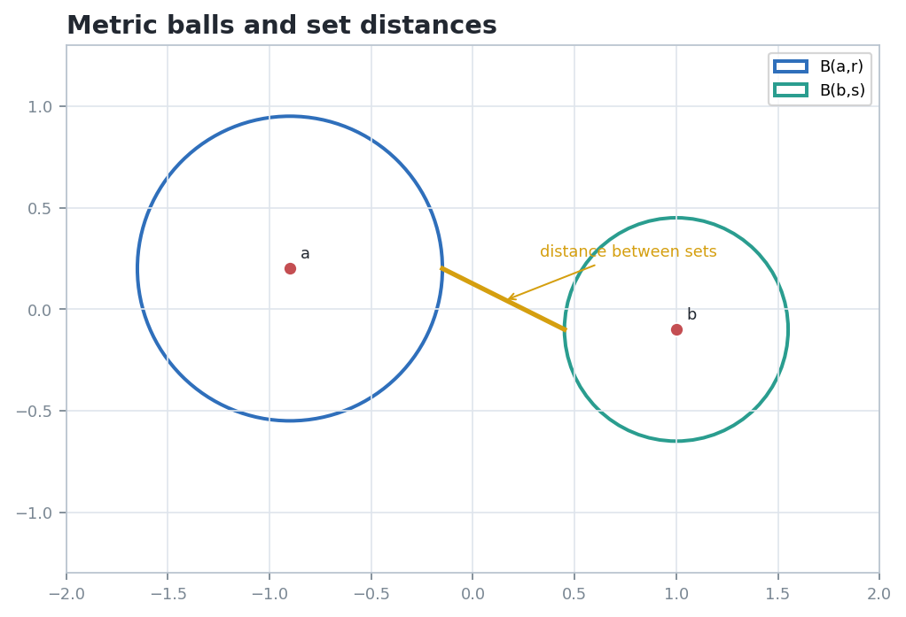
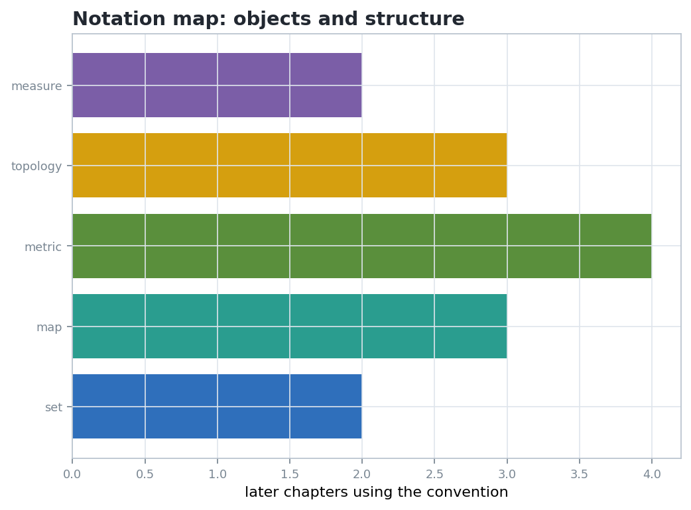

Notation and Background
Chapter 0 is a compact translation layer: it fixes the symbolic language that later chapters turn into constructions, transformations, metric estimates, compactness arguments, hyperbolic functions, and measure computations.
Chapter question. Which background conventions become computational objects in later geometry?
From Notation to Inspectable Geometry
A symbol earns meaning from its domain, codomain, operation, or metric. Write those choices before performing algebra.
Generated figures are paired with small certificates: nonblank images, numeric distances, and named artifact paths.
Do not turn every point into coordinates too early. First name the geometric object; then choose a computational representation.
Sets and Maps: Domains Before Formulas
A map is a rule together with its domain and codomain. Images move subsets forward; preimages test membership backward.
Later, \(X\) may be a line, circle, surface, or configuration space. The same arrow notation records projection, symmetry, parametrization, and restriction.
Algebra Records How Motions Compose
A group action is a map \(G\times X\to X\). The algebraic law \(g(hx)=(gh)x\) says composition in symbols matches composition on objects.
When \(X\) is a vector space, matrices give computable representatives. The invariant might be a subspace, determinant, inner product, or orbit type.
Lecture warning. Algebra is bookkeeping for geometry, not a substitute for it. Always say which object the operation acts on.
Metric Language: Balls, Separation, and Certificates

A distance \(d:X\times X\to [0,\infty)\) turns proximity into a statement that can be tested, estimated, and visualized.
The notebook pairs the figure with nonblank image statistics and a geometry check, making the visual claim auditable.
Topology Names Which Limits Are Legal
In \(\mathbb{R}^n\), compactness can often be checked by closedness and boundedness, but the topological definition is about open covers.
Open sets describe neighborhoods; closure records reachable limit points; continuity protects open or closed structure through maps.
Closed and bounded is a Euclidean convenience. The open-cover definition travels better across manifolds, metric spaces, and quotient spaces.
Analytic Background: Measure and Hyperbolic Functions
Lebesgue measure supplies length, area, volume, and integration with enough stability to survive limits and decompositions.
The identities for \(\sinh\) and \(\cosh\) behave like trigonometry with the sign suited to hyperbolic geometry.
Working Checklist for Later Chapters

Given a transformation \(T:X\to X\), write the domain, the object acted on, one invariant, and one quantity that may change.
- Name the set or space before choosing coordinates.
- State whether a map is used on points, subsets, functions, or measures.
- Record the metric or topology before discussing limits.
- Ask which algebraic law is being represented geometrically.
- Attach a check: equality, invariant, bound, nonblank artifact, or finite subcover.
Takeaway. Chapter 0 gives the language that makes later geometric arguments portable: the same notation can describe a diagram, a computation, and a proof obligation.